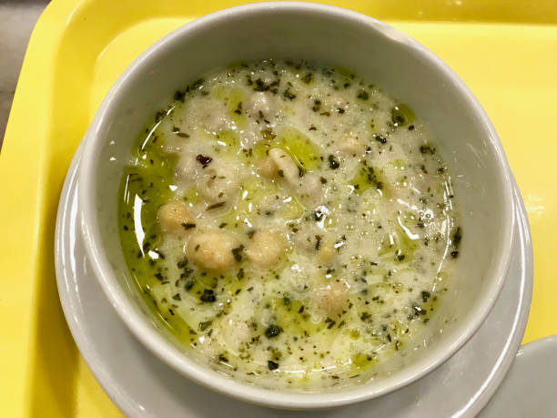

Yaz sofralarında hepimizin aradığı rahat ve farahlatıcı üstelik de çok hızlı hazırlanabilen tariflerden birisi geliyor. Buğdaylı soğuk çorba.
Çorbadan da ziyade yemeğinizin yanında tüketebileceğiniz, bir tür yancı, bir tür içecek gibi de oluyor.

Buğdaylı soğuk çorba
Malzemeler
- 1 çay bardağı aşurelik buğday
- 1/4 çay bardağı nohut
- 6 su bardağı su
- 1 tutam tuz
- Bir buçuk su bardağı yoğurt
Üzeri için
Nasıl yapılır?
- Buğdayı ve nohutu şişmesi için bir gece suda bekletin. Daha sonra süzün ve suyuyla birlikte pişmeye bırakın.
- Arada bir karıştırarak, tencereye yapışmasını önleyin.
- İyice yumuşadıktan sonra tuzunu ilave edip ocağın altını kapatın
- Diğer taraftan cam bir kasede yoğurdu çırpın ve içine buğdayı ve nohutu ilave edin.
- Kuru naneyi zeytinyağında kavurduktan sonra üzerine döküp soğuk olarak servis yapın.
İŞTE PÜF NOKTALAR!!!
- Pratikliği arttırmak için, buğdayları bolca ıslatabilir, bolca haşlayıp, porsiyonlara bölüp, haşlanmış olarak buzlukta saklayabilirsiniz.
AFİYET OLSUN